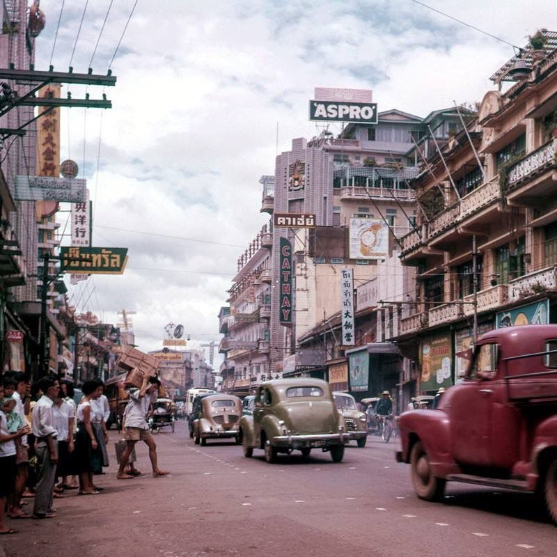

|
กรุงเทพมหานคร เป็นเมืองหลวงของประเทศ |
 |
ต่อมาใน พ.ศ. 2440 พระบาทสมเด็จพระจุลจอมเกล้าเจ้าอยู่หัวทรงดำริให้มีทดลองใช้ การปกครองแบบ “สุขาภิบาล” เพื่อเป็นพื้นฐานของการปกครองตนเองของประชาชนในอนาคต พ.ศ. 2458 พระบาทสมเด็จพระมงกุฎเกล้าเจ้าอยู่หัว ได้ทรงพระกรุณาโปรดเกล้าฯ ให้กระทรวงนครบาลมารวมกับกระทรวงมหาดไทย และมีการแต่งตั้งตำแหน่ง “สมุหพระนครบาล” ทำหน้าที่ปกครองดูแลรับผิดชอบมณฑลกรุงเทพมหานคร ซึ่งขณะนั้นประกอบด้วยจังหวัดพระนครธนบุรี นนทบุรี และสมุทรปราการ ต่อมาปี 2458 ได้ยกเลิกมณฆลกรุงเทพมหานคร กระทรวงนครบาลออก “ประกาศกระทรวงนครบาล เรื่อง กำหนดเขตท้องที่การปกครองกรุงเทพมหานคร” (21 ตุลาคม 2458) แยกจังหวัดพระนครธนบุรี เป็น จังหวัดพระนคร และจังหวัดธนบุรี |
|  | จนปี 2476 ได้มีพระราชบัญญัติจัดระเบียบบริหารราชการแห่งราชอาณาจักรสยามขึ้น มีผลให้มณฑลเทศาภิบาลต้องยกเลิกไป การบริหารราชการของแต่ละจังหวัดจึงขึ้นกับกระทรวงมหาดไทยโดยตรงทุกจังหวัดพ.ศ. 2514 จอมพลถนอม กิตติขจร เป็นหัวหน้าคณะปฏิวัติ ได้มีประกาศของคณะปฏิวัติ ฉบับที่ 24 ลงวันที่ 21 ธันวาคม พุทธศักราช 2514 ให้รวมจังหวัดพระนครและจังหวัดธนบุรีเข้าด้วยกันเป็นหนึ่งจังหวัดและเรียกว่า “นครหลวงกรุงเทพธนบุรี”ต่อมาในปี 2515 คณะปฏิวัติออกประกาศคณะปฏิวัติฉบับที่ 335 (13 ธันวาคม พ.ศ. 2515 ให้เปลี่ยนแปลงรูปแบบการปกครองนครหลวงกรุงเทพธนบุรีใหม่อีกครั้ง สาระสำคัญ คือ ให้รวมกิจการปกครองทั้งหมดในเขตนครหลวงกรุงเทพธนบุรี เป็นหน่วยการปกครองเดียวกัน คือ “กรุงเทพมหานคร”, ให้จัดระเบียบบริหารราชการกรุงเทพมหานครเสียใหม่ โดยรวมการบริหารราชการส่วนภูมิภาคและราชการบริหารส่วนท้องถิ่นเข้าด้วยกัน แต่ยังคงมีฐานะเป็นจังหวัด, ให้มีผู้ว่าราชการและรองผู้ว่าฯ เป็นข้าราชการการเมือง แต่งตั้งและถอดถอนโดยคณะรัฐมนตรี
|